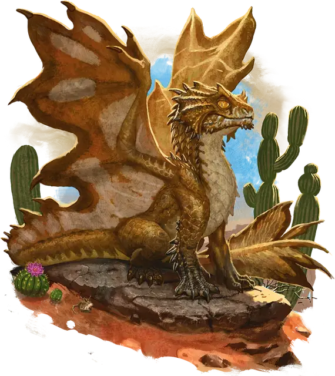

Вирмлинг латунного дракона
Brass Dragon Wyrmling
Средний Дракон (Металлический), Хаотичный Добрый

Класс Защиты 15 Инициатива +2 (12)
Хиты 22 (4к8 + 4)
Скорость 30 футов, Полёта 60 футов, Копания 15 футов
| мод | спас | ||
|---|---|---|---|
| СИЛ | 15 | +2 | +2 |
| ЛОВ | 10 | +0 | +2 |
| ТЕЛ | 13 | +1 | +1 |
| мод | спас | ||
|---|---|---|---|
| ИНТ | 10 | +0 | +0 |
| МДР | 11 | +0 | +2 |
| ХАР | 13 | +1 | +1 |
Иммунитеты Огонь
Чувства Тёмное зрение 60 футов, пассивное Восприятие 14, Слепое зрение 10 футов
Языки Драконий
Опасность 1 (200 опыта; БВ +2)
Действия
Раздирание. Бросок рукопашной атаки: +4, досягаемость 5 фт. Попадание: 7 (1к10 + 2) Рубящего урона.
Огненное дыхание (Перезарядка 5–6). Спасбросок Ловкости: Сл 11, каждое существо в Линии длиной 20 футов и шириной 5 футов. Провал: 14 (4к6) урона Огнём. Успех: Только половина урона.
Усыпляющее дыхание. Спасбросок Телосложения: Сл 11, каждое существо в 15-футовом Конусе. Провал: Цель становится Недееспособна до конца своего следующего хода, а затем повторяет спасбросок. Второй провал: Цель становится Бессознательной на 1 минуту. Этот эффект оканчивается на цели, если она получит урон или существо в пределах 5 футов от неё разбудит цель, потратив действие.
Бонус мастерства +2
Среда обитания Пустыня
Сокровища Магические
Латунные драконы
Драконы знаний и гармонии
Общительные и открытые латунные драконы любят делиться знаниями и историями. Хотя эти металлические драконы предпочитают засушливые земли, они с удовольствием путешествуют на большие расстояния, чтобы встретиться с друзьями, поделиться знаниями и узнать последние новости. Несмотря на свой добродушный характер, латунные драконы всегда готовы вступить в сражение, обезвреживая врагов магическим сном и испепеляя их огнём.
Латунным драконам нравится тёплый климат, особенно степи и каменистые или песчаные пустыни, и они часто селятся неподалёку от крупных перекрёстков или оазисов, популярных среди путников. Этим драконам нравится принимать облик Гуманоидов и маскироваться под странствующих торговцев, учёных, сказителей и других любителей послушать чужие истории.
Латунные драконы коллекционируют самые разные вещи. Хотя эти предметы могут показаться бесполезными безделушками, каждый из них связан с некой историей: он может, например, быть ностальгическим напоминанием или свидетельством легендарного события. В кладовой латунного дракона на одной полке могут лежать шляпа старого друга и корона последнего правителя забытой династии.
Вирмлинги латунного дракона отличаются неуёмным любопытством. Они охотно вступают в контакт с окружающими и жаждут исследовать места, где происходят или происходили захватывающие истории. Наслушавшись рассказов о приключениях, многие из них отправляются в собственные странствия.